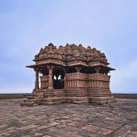

The area in which Gwalior is situated was the core of Gwalior princely state. That state was once the domain of the Sindhia family, a Maratha dynasty that controlled much of northwestern India during the second half of the 18th century. The foundations of the Gwalior state were laid by Ranoji Sindhia about 1745, and the state reached its greatest extent under Sindhia Mahadaji (reigned 1761–94). Mahadaji was the ruler of a vast territory that included parts of central India and Hindustan proper (northern India), while his officers exacted tribute from the principal Rajput rulers, including those of Jaipur and Jodhpur.
